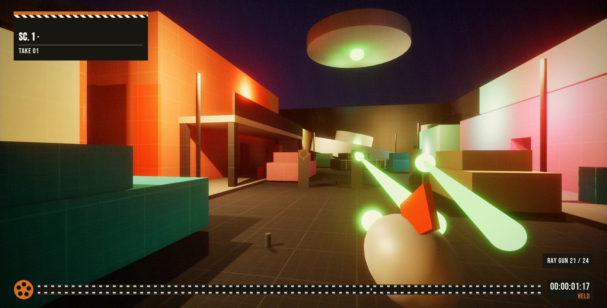
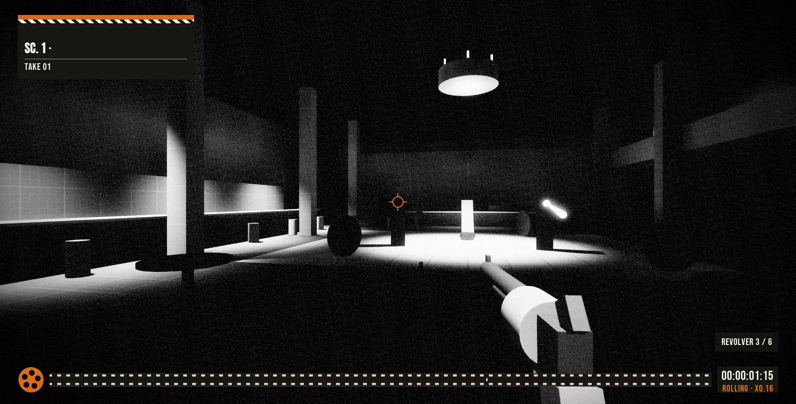

Bullets you can watch: the ray gun and the revolver in slow time
Each film has its own gun. Shots are real objects in the world, so when you stand still they hang in the air with everything else.
Day 1, Thu 12 NovHour 13
Reel Time's one rule is that time only runs while you move. Guns are where that rule gets interesting.
The task for the time system puts numbers on it: the world runs at about 4% when you stand still, about 15% when you only turn your head, and full speed when you move. Nothing snaps; it eases over a tenth of a second or so. The player is never slowed.
A shot isn't a line drawn from the gun to the target. It's an object that flies, so it obeys the same clock. Fire, stop moving, and you can walk your eyes along your own bullets. Enemy shots hang the same way, which is the point: you get to read the room.

One gun per film
The level's film picks the weapon you start with:
- Zombie grindhouse: the machete.
- 1950s UFO invasion: the ray gun, 24 shots.
- Noir: a six-shot revolver.
There's no reloading. From the Gameplay session's log: "empty guns just click".

Fixed since this morning
At 11:00 the ray gun's glow washed out half the screen and the revolver's shots were invisible. The Engine's note on the stills then: "revolver: no visible projectile; gun reads as a bar." Both guns now have a shape, and both shots read.
Not done
- The guns are still simple blocks. The ray gun is a ball and a cone.
- Nothing gets shot in these clips. They're demos fired into empty sets.
- The noir set is still very dark outside the spotlight.